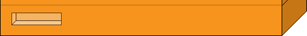

<!--
/*
  --------------------------------------------------------------
  Diese File stellt die Fragen dar und erzeugt die Leiste unten
  zur Navigation. Falls Bogus, wird auch nocht der Bogus-Text
  eingeblendet.
  
  --------------------------------------------------------------
  Author:		Ulrich Santo(US)
  Firm:			GLAMUS GmbH
  E-Mail:		santo@glamus.de
  Tel:			+49 228 97617 21
  Copyright		(C) Bundeszentrale für poltische Bildung

  Revised on 27.4.2003 13:44
    Themen
    1.0   am 25.4.2003  (US)
    	erste Version
    1.1   am 27.4.2003  (US)
    	- Kommentare eingefügt
    	- Layout auf Netscape 4.7 / IE / Netscape 6.0 validiert
    	- Bogus
  --------------------------------------------------------------
*/

//-->
<head>
<title>Wahlomat</title>
<link rel=stylesheet type="text/css" href="style.css">
</head>

<body class=adf>
  <script language="javascript"> 
   if (parent.TOPPY!=1){
   	  location.href = "main_app.html";
   	  exit;
   };

   function beantworteFrage(img_name,src,value){
      zw=src.split("_on.gif");
      //alert(zw[0]);
      document.images[img_name].src=zw[0]+".gif";
      window.setTimeout("beantworteFrage2('"+img_name+"','"+src+"',"+value+")",80);
   }
   
   function beantworteFrage2(img_name,src,value){
      //alert(src); 
      document.images[img_name].src=src;
      window.setTimeout("parent.beantworteFrage("+value+")",150);
   }
   
   S_nSprache=parent.S_nSprache;
   S_nTheseAktuell=parent.S_nTheseAktuell;
   S_nTheseMax=parent.S_nTheseMax;
   S_aThesen=parent.S_aThesen;
   
   WOMT_aThesenBilder=parent.WOMT_aThesenBilder;
   WOMT_aThesen=parent.WOMT_aThesen;
   WOMT_nThesen=parent.WOMT_nThesen;
   WOMT_nTableWidth=parent.WOMT_nTableWidth;
   WOMT_nTexte=parent.WOMT_nTexte;
   WOMT_aParteienLogos=parent.WOMT_aParteienLogos;
   WOMT_nParteien=parent.WOMT_nParteien;
   WOMT_aBilder=parent.WOMT_aBilder;
   WOMT_aTexte=parent.WOMT_aTexte;
  
   b=S_nTheseAktuell+1;
     
function write_1_fragen(){
rw='';
rw+='<center>';
rw+='<a name="top"></a><table border="0" cellpadding="0" cellspacing="0" width="774" height="54" bgcolor="#F4E7EA">';
rw+='<tr>';
rw+='<td width="260"><a href="http://www.bpb.de" target="_blank"></a></td>';
rw+='<td width="507" align="right"><font class="elf" color="#961734"> <a href="impressum.html" onClick="f1=window.open(\'\',\'faq\',\'scrollbars=1,toolbar=1,menubar=0,location=0,status=0,resizable=0,width=348,height=430,print=yes,left=2,top=2\');if (parseInt(navigator.appVersion)>2) {f1.focus();}" TARGET="faq"><font class="elf" color="#961734">Impressum</font></a></td>';
rw+='<td width="25"></td>';
rw+='</tr>';
rw+='</table>';
rw+='<br>';
rw+='<table border="0" cellpadding="0" cellspacing="0" width="774" bgcolor="#EBF0FF">';
rw+='<tr>';
rw+='<td valign="top" align="center"><br>';
rw+='<br>';
rw+='<!-- beginn haupttabelle -->';
rw+='<table border="0" cellpadding="0" cellspacing="0" width="508">';
rw+='<tr>';
rw+='<td valign="top" width="1" bgcolor="#000000"></td>';
rw+='<td valign="top" width="18" bgcolor="#F7941D"></td>';
rw+='<td valign="top" width="1" bgcolor="#000000"></td>';
rw+='<td valign="top" width="340">';
rw+='<!-- beginn zaehlung -->';
rw+='<table border="0" cellpadding="0" cellspacing="0" width="340" background="images/wahlomat/bg_links.gif" bgcolor="#ffffff" height="26">';
rw+='<tr>';
rw+='<td width="36"></td>';
rw+='<td><font class="standard" size="1">';
	rw+=(S_nTheseAktuell+1)+" "+WOMT_aTexte['fragen_von'][S_nSprache]+" "+WOMT_nThesen+" "+WOMT_aTexte['fragen_these'][S_nSprache]+" </font></td>";
rw+='</tr>';
rw+='</table>';
rw+='<!-- ende zaehlung -->';
rw+='<!-- beginn thesen -->';
rw+='<table border="0" cellpadding="0" cellspacing="0" width="340" bgcolor="#ffffff" height="127">';
rw+='<tr>';
rw+='<td valign="top" width="36"></td>';
rw+='<td valign="top" width="268"><font class="standard" size="2" color="#000000"><br><b>';
	if (WOMT_aThesen[S_nTheseAktuell][S_nSprache][1]!=""){ // lange Version nehmen falls vorhanden!
		rw+=WOMT_aThesen[S_nTheseAktuell][S_nSprache][1];
	} else {
		rw+=WOMT_aThesen[S_nTheseAktuell][S_nSprache][0];
	}
rw+='</b><br><br>';
    if (parent.is_bogus()){
        rw+=WOMT_aTexte["fragen_bogus"][S_nSprache];
        parent.reset_bogus();
    }
rw+='</font></td>';
rw+='<td valign="top" width="36"></td>';
rw+='</tr>';
rw+='</table></td>';
rw+='<!-- ende thesen -->';
rw+='<td valign="top" width="1" bgcolor="#000000"></td>';
rw+='<td valign="top" width="4" bgcolor="#F7941D"></td>';
rw+='<td valign="top" width="1" bgcolor="#000000"></td>';
rw+='<td valign="top" width="81" background="images/wahlomat/bg_rechts.gif" bgcolor="#F8B461">';
rw+='<table border="0" cellpadding="3" cellspacing="0" width="81" bgcolor="#F8B461">';
rw+='<tr>';
rw+='<td></td>';
rw+='<td><b><a href="faq.html" onClick="f1=window.open(\'\',\'faq\',\'scrollbars=1,toolbar=1,menubar=0,location=0,status=0,resizable=0,width=348,height=430,print=yes,left=2,top=2\');if (parseInt(navigator.appVersion)>2) {f1.focus();}" TARGET="faq"><font class="elf">FAQ</font></a></b></td>';
rw+='</tr>';
rw+='<tr>';
rw+='<td></td>';
rw+='<td><b><a href="mailto:info@wahl-o-mat.de"><font class="elf">E-Mail</font></a></b></td>';
rw+='</tr>';
rw+='</table></td>';
rw+='<td valign="top" width="1" bgcolor="#000000"></td>';
rw+='<td valign="top" width="18" bgcolor="#F7941D"></td>';
rw+='<td valign="top" width="1" bgcolor="#000000"></td>';
rw+='<td valign="top" width="40" bgcolor="#C67615"></td>';
rw+='<td valign="top" width="1" bgcolor="#000000"></td>';
rw+='</tr>';
rw+='</table>';
rw+='<!-- ende haupttabelle --></td>';
rw+='</tr>';
rw+='</table>';
rw+='<!-- beginn fuss wahlomat -->';
rw+='<table border="0" cellpadding="0" cellspacing="0" width="774" background="images/bg.gif"  bgcolor="#EBF0FF">';
rw+='<tr>';
rw+='<td valign="top" align="center" colspan="2">';
rw+='</td>';
rw+='</tr>';
rw+='<tr>';
rw+='<td valign="top" align="center" colspan="2">';
rw+='<!-- beginn abstimmung -->';
rw+='<table border="0" cellpadding="0" cellspacing="0" width="508" bgcolor="#F7941D" background="images/fill.gif">';
rw+='<tr>';
rw+='<td valign="top" width="1" bgcolor="#000000"></td>';
rw+='<td valign="top" width="19" bgcolor="#F7941D"></td>';
rw+='<td valign="top" width="446"><br>';
rw+='<!-- beginn buttons -->';
rw+='<table border="0" cellpadding="0" cellspacing="0" width="430" bgcolor="#F7941D">';
rw+='<tr>';
rw+='<td valign="top">';
	rw+='<a href="';
	rw+='javascript:beantworteFrage(\'zustimmung\',\'images/wahlomat/buttons/zustimmung_on.gif\',1)" onMouseOut="change_image(\'zustimmung\',\'images/wahlomat/buttons/zustimmung.gif\');" onMouseOver="change_image(\'zustimmung\',\'images/wahlomat/buttons/zustimmung_on.gif\');">';
	rw+='</a>';
	
	rw+='<a href="';
	rw+='javascript:beantworteFrage(\'neutral\',\'images/wahlomat/buttons/neutral_on.gif\',0)" onMouseOut="change_image(\'neutral\',\'images/wahlomat/buttons/neutral.gif\');" onMouseOver="change_image(\'neutral\',\'images/wahlomat/buttons/neutral_on.gif\');">';
	rw+='</a>';

	rw+='<a href="';
	rw+='javascript:beantworteFrage(\'ablehnung\',\'images/wahlomat/buttons/ablehnung_on.gif\',-1)" onMouseOut="change_image(\'ablehnung\',\'images/wahlomat/buttons/ablehnung.gif\');" onMouseOver="change_image(\'ablehnung\',\'images/wahlomat/buttons/ablehnung_on.gif\');">';
	rw+='</a>';
	
	rw+='</td>';
	rw+='<td valign="top" align="right">';
	rw+='<a href="';
	rw+='javascript:beantworteFrage(\'keine_meinung\',\'images/wahlomat/buttons/keine_meinung_on.gif\',-2)" onMouseOut="change_image(\'keine_meinung\',\'images/wahlomat/buttons/keine_meinung.gif\');" onMouseOver="change_image(\'keine_meinung\',\'images/wahlomat/buttons/keine_meinung_on.gif\');">';
	rw+='</a>';

	rw+='</td>';
	
rw+='</tr>';
rw+='</table></td>';
rw+='<!-- ende buttons -->';
rw+='<td valign="top" width="1" bgcolor="#000000"></td>';
rw+='<td valign="top" width="40" bgcolor="#C67615"></td>';
rw+='<td valign="top" width="1" bgcolor="#000000"></td>';
rw+='</tr>';
rw+='</table></td>';
rw+='<!-- ende abstimmung -->';
rw+='</tr>';
rw+='<tr>';
rw+='<td valign="top" align="center" colspan="2">';
rw+='</td>';
rw+='</tr>';
rw+='<!-- beginn sponsoren -->';
rw+='<tr>';
rw+='<td valign="bottom"><a href="wichtige_hinweise.html" onClick="f1=window.open(\'\',\'faq\',\'scrollbars=1,toolbar=1,menubar=0,location=0,status=0,resizable=0,width=348,height=430,print=yes,left=2,top=2\');if (parseInt(navigator.appVersion)>2) {f1.focus();}" TARGET="faq"></td>';
rw+='<td valign="top" align="right"><a href="http://www.bjr.de" target="_blank"></a><a href="http://www.stemwijzer.nl" target="_blank"></a></td>';
rw+='</tr>';
rw+='<!-- ende sponsoren -->';
rw+='<tr>';
rw+='<td valign="top" align="center" colspan="2"><br>';
rw+='<!-- beginn zaehler -->';
rw+='<table border="0" cellpadding="0" cellspacing="0" width="756" height="21" background="images/wahlomat/bg_zaehler.gif">';
rw+='<tr>';
rw+='<td>';
	     if (S_nTheseAktuell>0){
           c=S_nTheseAktuell-1;
           href='javascript:parent.change_frage('+c+');';
         } else {
           href="javascript:parent.replaceIFrame('0')";
         }
rw+='<a href="'+href+'"></a></td>';
rw+='<td valign="top"><br>';
rw+='<table border="0" cellpadding="0" cellspacing="0" height="19" bgcolor="#D9E2FF">';
rw+='<tr>';
        width=Math.floor(536/WOMT_nThesen);
        rest=536/WOMT_nThesen-width;
        count=0.0;
        for (a=0;a<WOMT_nThesen;a++){
           count+=rest;
           if (count>1.0){
             width_set=width+1;
             count-=1.0;
           } else {
             width_set=width;
           }
           b=a+1;
           bgcolor="#d6d3d6";
  		   if (a==S_nTheseAktuell){
  
              rw+='<td class="fortschritt">&nbsp;<b>'+b+'&nbsp;</b></font></td>';
	           if (a<S_nTheseMax){
	              rw+='<td class="fortschritt">|</td>';
	           }
           } else if (a<=S_nTheseMax){
              
              rw+='<td class="fortschritt"><a class="these-visited" href="javascript:parent.change_frage('+a+')">&nbsp;'+b+'&nbsp;</a></td>';	          
	          if (a<S_nTheseMax){
	              rw+='<td class="fortschritt">|</td>';
	           }
           } else {
           }
        }
rw+='<td>';
				if ((S_nTheseAktuell<=S_nTheseMax-1)||(S_nTheseMax>=WOMT_nThesen)){
	               rw+='<a href="javascript:parent.change_frage('+
	               +(S_nTheseAktuell+1)+')"></a>';
	             } else {
	               rw+='';
	             }
rw+='</td>';
rw+='</tr>';
rw+='</table></td>';
rw+='<td align="right"></td>';
rw+='</tr>';
rw+='</table><br></td>';
rw+='<!-- ende zaehler -->';
rw+='</tr>';
rw+='</table>';
rw+='<!-- ende fuss wahlomat -->';
rw+='</center>';
	return rw;
}
   function change_image(name,src){
      document.images[name].src=src;
      //window.setTimeout("parent.beantworteFrage("+value+")",150);
   }

 document.writeln(write_1_fragen());  

</script>
</body>
</html>
